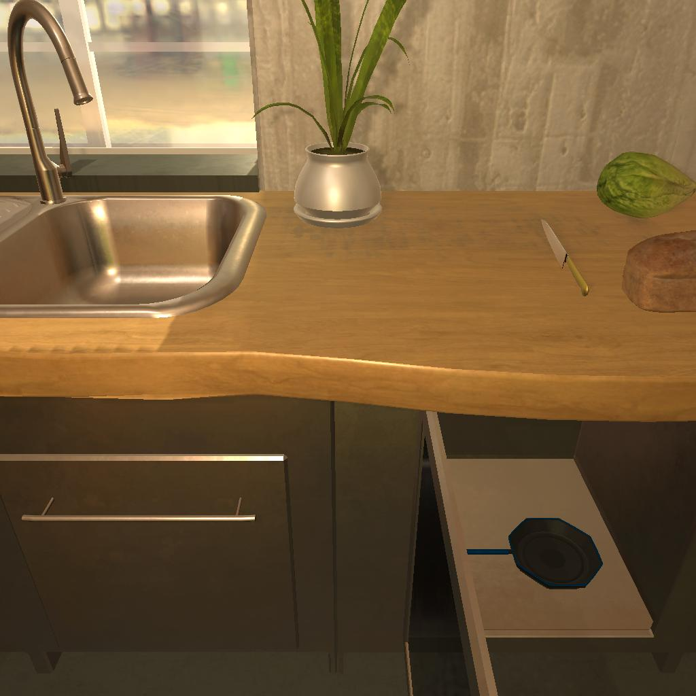

---------------------------------------------------------task: 26---------------------------------------------------------
--------------------------------------------------------------------------------------------------------------------------------------------------------------------
--------------------------------------------------------------------------------------------------------------------------------------------------------------------
Step:--------------------------------------------------------------------------7-------------------------------------------------------------------------------
----------------------------------------
VLM Prompt:
**Task**
Please perform as an embodied AI agent. Our final objective is to put two kettle in cabinet. Below is the plan for completing the task, the current observation, alongside historical data and admissible actions for the next step. Please determine the best action for the next step!
**Plan**
Below is a detailed step-by-step plan to complete the task.
1. Find a kettle.
2. Pick up the kettle.
3. Find a cabinet.
4. Place the picked-up kettle in the cabinet.
5. Find another kettle.
6. Pick up the kettle.
7. Return to the previously located cabinet.
8. Place the second picked-up kettle in the cabinet with the first kettle.
**Current Observation**
Displayed is an image capturing the current position of the agent.
Objects in The Image: ['kitchen sink', 'faucet', 'plant in pot', 'window', 'cucumber', 'knife', 'bread', 'cabinet', 'drawer', 'speaker']
**History Information**
Displayed are the previous observations with their corresponding actions.
State 0:
No history.
State 1:
1. Step Index in the Plan: 1
2. Objects: Sink (without kettle)
3. Action: go to countertop 1
State 2:
1. Step Index in the Plan: 1
2. Objects: Countertop, Lettuce, Apple, Bread, Plastic Cup
3. Action: go to coffeemachine 1
State 3:
1. Step Index in the Plan: Unknown (assumed next step after finding the statue)
2. Objects: Coffee Maker, Coffee Cup
3. Action: go to cabinet 1
State 4:
1. Step Index in the Plan: Likely after finding the kettle
2. Objects: Coffee Machine, Coffee Cup, Wooden Counter
3. Action: open cabinet 1
State 5:
1. Step Index in the Plan: Unknown
2. Objects: Coffee Maker, Coffee Cup, Wooden Counter, Cabinet 1 (opened)
3. Action: close cabinet 1
State 6:
1. Step Index in the Plan: Unclear (either verifying kettle placement or finding another kettle)
2. Objects: Coffee Maker, Cup, Table, Saucer, Sponge (none relevant to the current step)
3. Action: go to cabinet 2
State 7:
1. Step Index in the Plan: Unclear (potentially 3 or 7)
2. Objects: Kitchen counter, Sink, Plant, Cucumber, Knife, Bread, Cabinet doors
3. Action: open cabinet 2
**Admissible Actions**
(1): go to countertop 1
(2): go to coffeemachine 1
(3): go to cabinet 1
(4): go to drawer 1
(5): go to sink 1
(6): go to sinkbasin 1
(7): go to cabinet 3
(8): go to garbagecan 1
(9): go to cabinet 4
(10): go to drawer 2
(11): go to fridge 1
(12): go to microwave 1
(13): go to dresser 1
(14): go to sidetable 1
(15): go to drawer 3
(16): go to drawer 4
(17): go to drawer 5
(18): go to drawer 6
(19): go to drawer 7
(20): go to drawer 8
(21): close cabinet 2
(22): take houseplant 1 from cabinet 2
(23): take faucet 1 from cabinet 2
(24): take pan 1 from cabinet 2
(25): take bread 1 from cabinet 2
(26): take lettuce 1 from cabinet 2
(27): take knife 1 from cabinet 2
**Analysis Guideline**
1. Analyze the history and current observation, and then determine our current step in the plan and our current place.
2. List all visible objects related to the task in the current observation, without summarizing any as "various items."
3. Analyze the objects in the current observation based on the history and the requirements for the current step, and then determine if we can complete the step with the current observation.
4. Analyze and decide on the most appropriate action to take.
5. Summarize the analysis using the following format: "Analysis: [The summarization of the analysis], The Most Appropriate Action: (i which is the integer.): [Selected action]"
**Notes**
1. We must complete each step of the plan in order and cannot skip steps when the previous ones are not finished.
2. For "Go to" actions listed as "go to xxx [n]", interpret this as there are n distinct actions available: "go to xxx 1", "go to xxx 2", ..., "go to xxx n". Select one specific action from these options instead of using "go to xxx [n]".
3. If receptacles such as drawers, cabinets, and so forth are closed in the current observation, we may try to open them.
4. Pay attention to synonyms and ensure clarity in the terms used.
5. We must determine and provide the single action which must be in the **Admissible Actions**.
6. If there is no history available, we are at the first step and the current place is "Unknown".
**Answer**
Please select the most suitable action by following the **Analysis Guideline**, keeping the above **Notes** in mind.
----------------------------------------
----------------------------------------
VLM Response:
Analysis: Based on the current observation and the history information provided, the agent appears to be at step 7 or 8 in the plan, which involves placing the second kettle into the cabinet with the first one. The agent has just opened cabinet 2, and the image shows a kettle inside the opened cabinet. No other kettles are visible in the current observation. Therefore, the current step in the plan is to take the kettle from the cabinet and then proceed to place it in the cabinet with the first kettle. The most appropriate action from the list of admissible actions is to take the kettle from the currently open cabinet.
The Most Appropriate Action: (24): take pan 1 from cabinet 2
----------------------------------------
----------------------------------------
>>> Refine VLM Response and Get Pure Action: take pan 1 from cabinet 2
----------------------------------------
-----------------------------------------------------------------
Running time: 9.336774110794067 seconds
Total Money: 0
-----------------------------------------------------------------
-----------------------------------------------------------------
Summarization Prompt:
**Context**
Analysis: Since there is no history information, we are at the first step in the plan, which is to find a statue. The current place is unknown. In the current observation, we see a floorlamp next to an armchair with a small table that has a small object on it, which could potentially be the statue we are looking for. Since the plan requires us to find a statue first and it appears there might be one on the table next to the armchair, we should investigate this object to determine if it is the statue we need.
The Most Appropriate Action: (1): go to armchair 1
**Summary**
1. Step Index in the Plan: 1
2. Objects: Floorlamp, Armchair, Small Table, Small Object (potential statue)
3. Action: go to armchair 1
**Context**
Analysis: Based on the current observation and the history information provided, the agent appears to be at step 7 or 8 in the plan, which involves placing the second kettle into the cabinet with the first one. The agent has just opened cabinet 2, and the image shows a kettle inside the opened cabinet. No other kettles are visible in the current observation. Therefore, the current step in the plan is to take the kettle from the cabinet and then proceed to place it in the cabinet with the first kettle. The most appropriate action from the list of admissible actions is to take the kettle from the currently open cabinet.
The Most Appropriate Action: (24): take pan 1 from cabinet 2
Please summarize the context by following above examples when providing the summary, and ensure that only the summary is included, without any extra explanation.
**Summary**
-----------------------------------------------------------------
-----------------------------------------------------------------
Summarization Response:
1. Step Index in the Plan: 7 or 8
2. Objects: Cabinet 2, Kettle inside Cabinet
3. Action: take pan 1 from cabinet 2
-----------------------------------------------------------------
-----------------------------------------------------------------
Text Observation:You pick up the pan 1 from the cabinet 2.
-----------------------------------------------------------------
UNSUCCEED